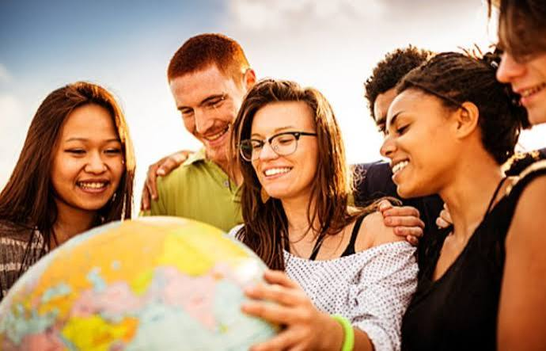
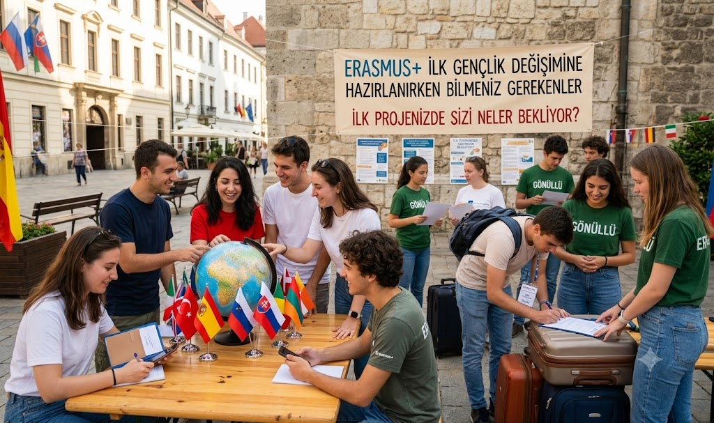
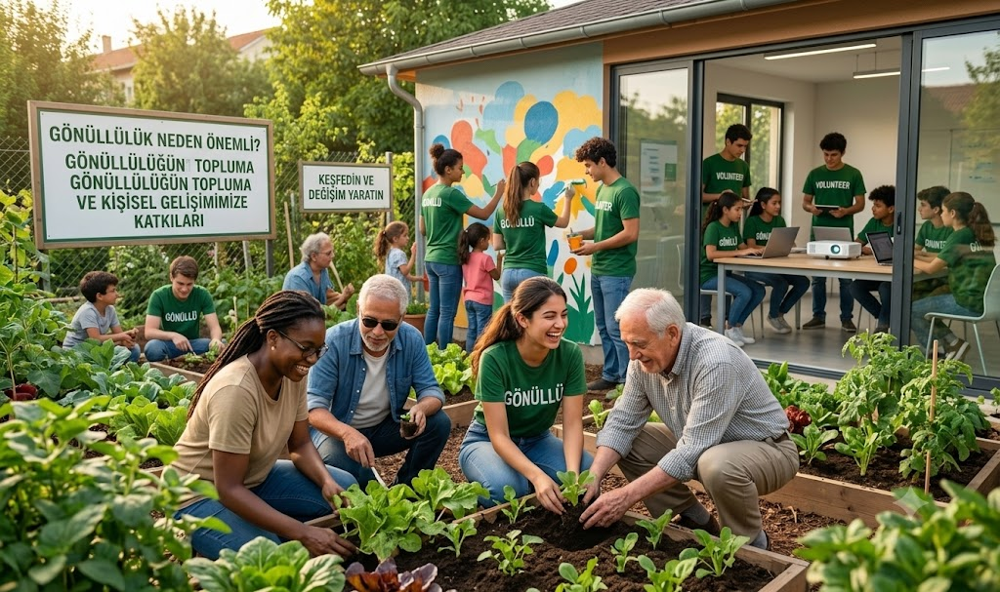

Hikâyeler, Fikirler ve Fırsatlar
Erasmus+ deneyimleri, gönüllülük, gençlik fırsatları ve ilham veren hikâyelerle YANKI'nın dünyasını keşfedin.
Erasmus+ deneyimleri, gönüllülük, gençlik fırsatları ve ilham veren hikâyelerle YANKI'nın dünyasını keşfedin.

Farklı kültürleri tanımak, yeni insanlarla tanışmak, konfor alanımızdan çıkmak ve dünyaya farklı bir pencereden bakmak...
Erasmus+ deneyimlerinin gençlere kazandırdığı unutulmaz anları, yeni bakış açılarını ve hayat boyu süren arkadaşlıkları keşfedin.
Devamını Oku

Gönüllülüğün hem içinde bulunduğumuz topluma hem de kişisel gelişimimize nasıl katkı sağladığını keşfedin.
Bir YANKI projesine veya Erasmus+ etkinliğine katıldın mı? Gönüllülük deneyimini paylaşmak ya da hikâyeni anlatmak ister misin?
Deneyimini bizimle paylaş, birlikte daha fazla gence ilham olalım.
Bize Ulaş